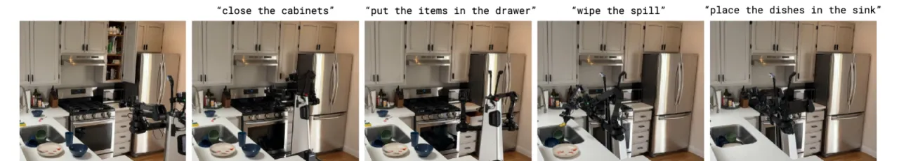
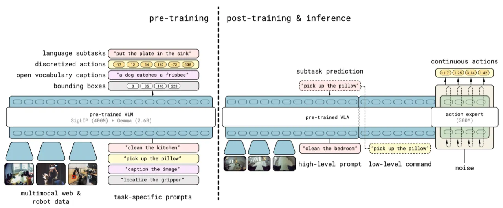
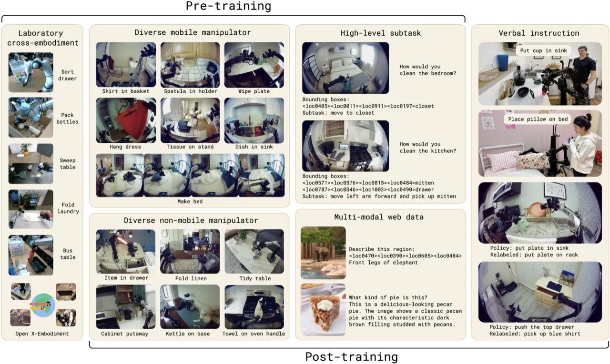
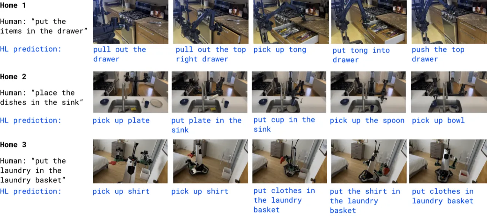
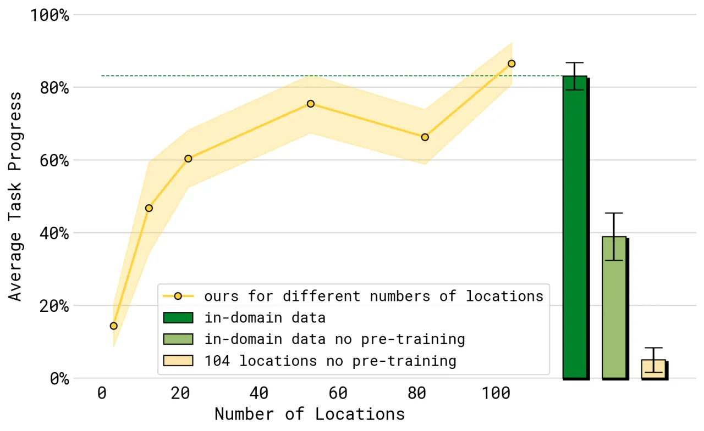
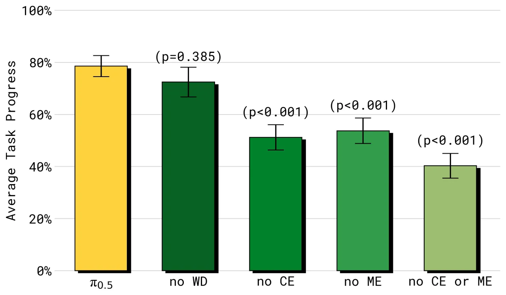

π₀.₅ 通过在异构数据源（多机器人、网页数据、语义预测等）上进行联合训练（co-training），赋予机器人广泛的开放世界泛化能力，首次在训练数据中从未出现过的全新家庭中，完成清洁厨房、整理卧室等长时域、灵巧的操作任务。
当前 VLA 模型在实验室受控场景中表现亮眼，但如何在真实的、从未见过的家庭环境中可靠执行长时域任务，仍是开放性挑战。简单堆砌机器人数据规模是不够的——泛化需要来自多个抽象层次的知识。
"In order for robots to be useful, they must perform practically relevant tasks in the real world, outside of the lab... achieving broad coverage of plausible scenarios via brute-force scaling of robot data collection is infeasible."

Vision-Language-Action (VLA) 模型将大语言模型的语义理解能力与机器人控制相结合，展现了强大的指令跟随能力。然而，现有方法的评测大多在与训练数据分布相近的环境中进行，真正的"野外"泛化能力尚未被验证。
π₀.₅ 的核心主张是：有效的开放世界泛化需要来自多个信息源的知识迁移，包括多机器人平台的数据、网页视觉数据，以及对任务语义结构的显式建模。
π₀.₅ 采用两阶段训练框架：首先在异构数据上进行大规模预训练，学习多抽象层次的知识；然后通过后训练阶段专门化为移动操作能力，同时引入 flow matching 实现连续动作的精细控制。

π₀.₅ 将联合分布分解为两个子问题：
底层架构为多模态 Transformer：图像 patch、文本 token 和连续动作值统一输入；图像/提示词使用双向注意力，动作输出使用因果注意力；本征状态（proprioceptive state）被离散化为文本 token 输入。
为了同时支持大规模预训练的效率与推理时动作精度，π₀.₅ 引入混合损失：
Loss = Cross-entropy(text tokens) + α · ‖ω − at − faθ(...)‖²
其中第一项为 FAST 离散动作 token 的交叉熵损失，第二项为 flow matching 连续动作的 L2 损失（后训练阶段 α=10.0）。这种设计使模型"既能进行快速可扩展的离散 token 预训练，又能通过 flow matching 实现高效精细的动作推理"。

评测分为两类：受控的"模拟房间"（mock homes）用于可复现的定量比较，以及全新真实家庭（real homes）进行最终验证。核心指标为任务完成进度（task progress）和语言跟随成功率。

| 模型 | 平均任务进度 | 相对提升 |
|---|---|---|
| π₀（基线） | ~35% | — |
| π₀-FAST+Flow | ~42% | +20% |
| π₀.₅（本文） | ~60% | +71% |
| 在测试环境上训练的模型（上限参考） | ~62% | — |

| 训练环境数量 | 平均任务进度 |
|---|---|
| 3 个 | ~25% |
| 53 个 | ~45% |
| 104 个 | ~60% |
| 在测试家庭中训练（参考上限） | ~62% |

| 配置 | 平均任务进度 | 说明 |
|---|---|---|
| 完整模型 | ~60% | 所有数据源 |
| 去除 WD（网页数据） | ~58% | 对整体任务影响较小 |
| 去除 ME | ~45% | 性能显著下降 |
| 去除 CE（跨平台数据） | ~40% | 性能大幅下降 |
| 去除 ME + CE | ~25% | 严重退化 |
实验进一步验证了显式高层推理的价值：
此外，移除 VI（语言指令，仅占训练数据 11%）会使性能下降到 ~50%，说明少量的专家语言指令对强性能"至关重要"。
作者指出："Some environments present persistent challenges (e.g., unfamiliar handles on drawers, or cabinets that are physically hard for the robot to open)." 陌生的物理结构（如特殊把手、难以打开的橱柜）仍会造成机器人持续失败，说明低层操作技能的泛化仍有瓶颈。
"Some behaviors present challenges with partial observability (e.g., the robot arm occluding a spill that should be wiped)." 当机械臂遮挡了需要处理的区域时，模型难以感知和规划，揭示了视觉输入受限时的决策盲区。
"In some cases the high-level sub-task inference is easily distracted (e.g., closing and opening a drawer multiple times while putting away items)." 高层语义推理模块在复杂场景下可能出现循环或无效行为，说明长时域规划的稳定性仍需提升。
模型"can accommodate relatively simple prompts"，且使用"relatively modest context"，限制了其在需要复杂多步骤规划或跨房间任务中的表现。未来工作需要探索更丰富的上下文建模能力。